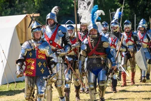
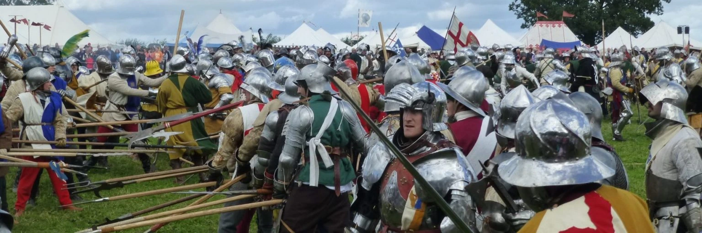

Re-enactment & Living History Events
Step into the world of Sir John Donne through living history and medieval re-enactment events held at historic venues across England. Explore armour, artefacts, and the daily life of the late fifteenth century.

Nottingham Castle
Overlooking the city of Nottingham, this historic site stands on the location of the original Norman castle and royal fortress. Today it hosts exhibitions, historic grounds, and special events celebrating the region’s rich medieval heritage.
Notes:
Dog friendly: Outdoor grounds & gardens; provided dogs are kept on leads.

Newstead Abbey
Once the home of poet Lord Byron, Newstead Abbey is a historic house and former Augustinian priory set within beautiful parkland, gardens, and lakes. Visitors can explore the historic grounds while enjoying living history and medieval demonstrations
Notes:
Dog friendly: Outside grounds & cafe courtyard only

Barnet Medieval Festival
This 555th-anniversary event commemorates the 1471 Battle of Barnet with dramatic re-enactments, medieval music, and crafts. It is a family-friendly weekend featuring over 500 actors, with parking and shuttle buses available.
Notes:
Dog friendly: Outdoor grounds & gardens; provided dogs are kept on leads.

Tewkesbury Medieval Festival
Running since 1983, this is Europe’s largest free medieval gathering. A spectacular re-enactment of the 1471 Battle of Tewkesbury, staged on part of the original battlefield, where participants, including families, live in authentic medieval encampments throughout the weekend. This year, our Sir John Donne re-enactor will be part of the action, bringing history vividly to life. Visitors can experience a full medieval world: period music, dance, and drama, fascinating historical characters such as surgeons, preachers, and even dragon keepers, & a bustling medieval market offering everything from suits of armour & gowns to herbs & sweets. Children can enjoy arts and crafts sessions, while exhibition tents showcase organisations dedicated to different aspects of history.
Notes:
Dog friendly: Dogs must be kept on leads.

Bosworth Battlefield
This year’s re-enactment takes place on the anniversary of the historic Battle of Bosworth. Witness the dramatic clash between Richard III and Henry Tudor—two kings facing off in a single day that marked the end of the Plantagenet dynasty and the beginning of the Tudor era. Experience the excitement of battle, the tension of history coming alive, and see the characters, tactics, and pageantry of this pivotal moment unfold before your eyes.
Notes:
Dog friendly: Outdoor grounds & gardens; provided dogs are kept on leads.